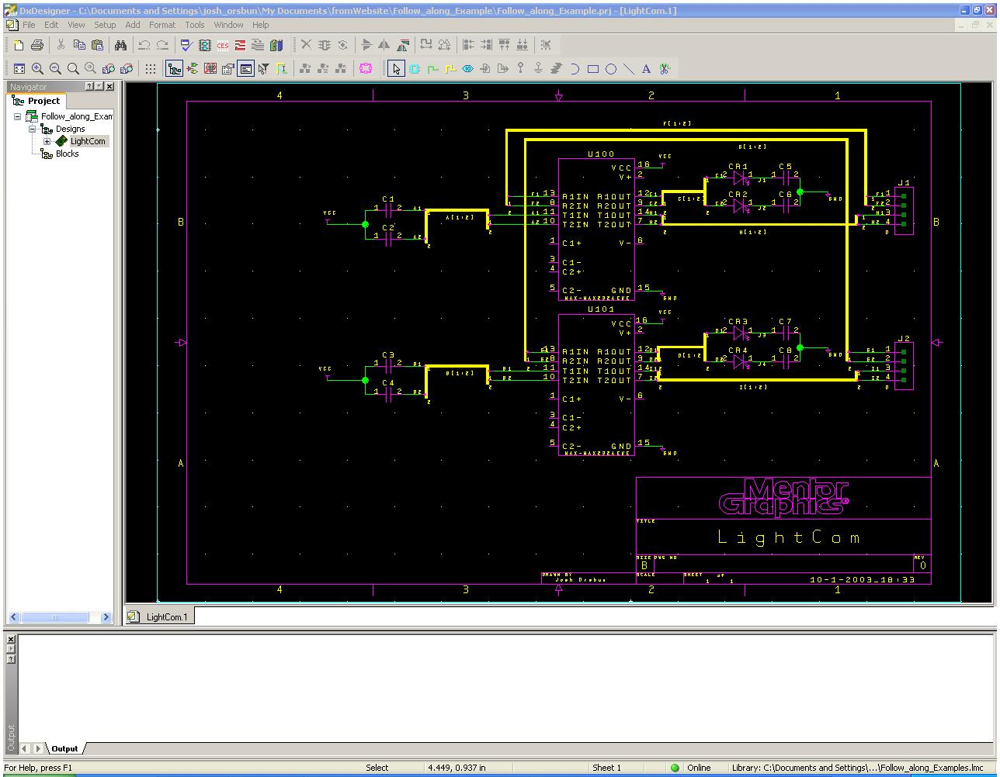
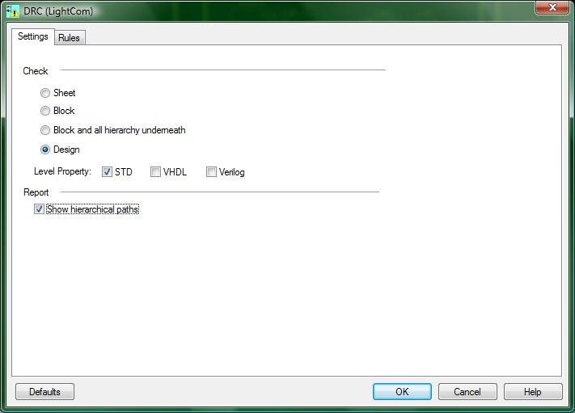
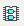
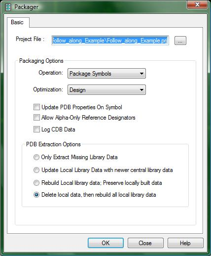
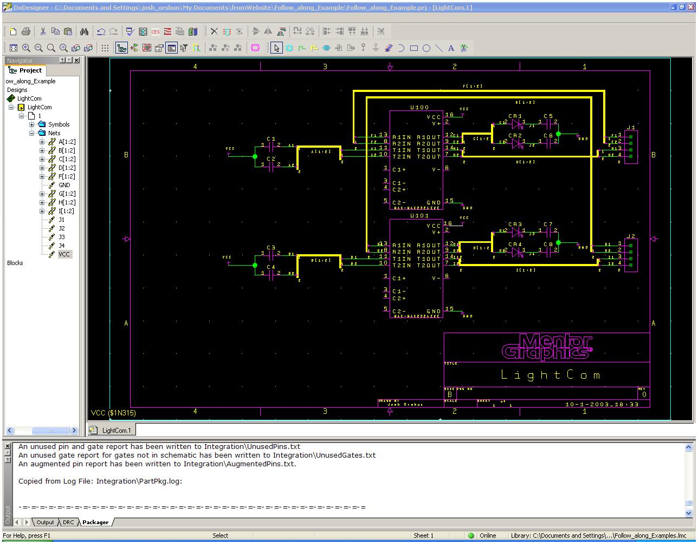
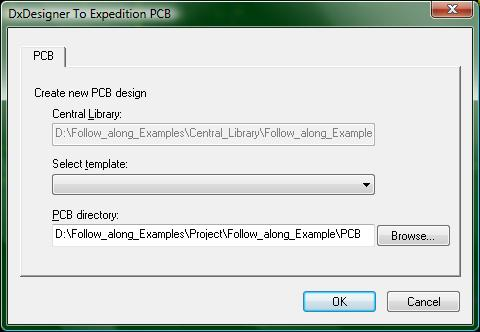
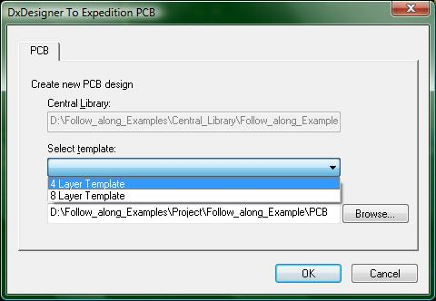
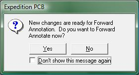
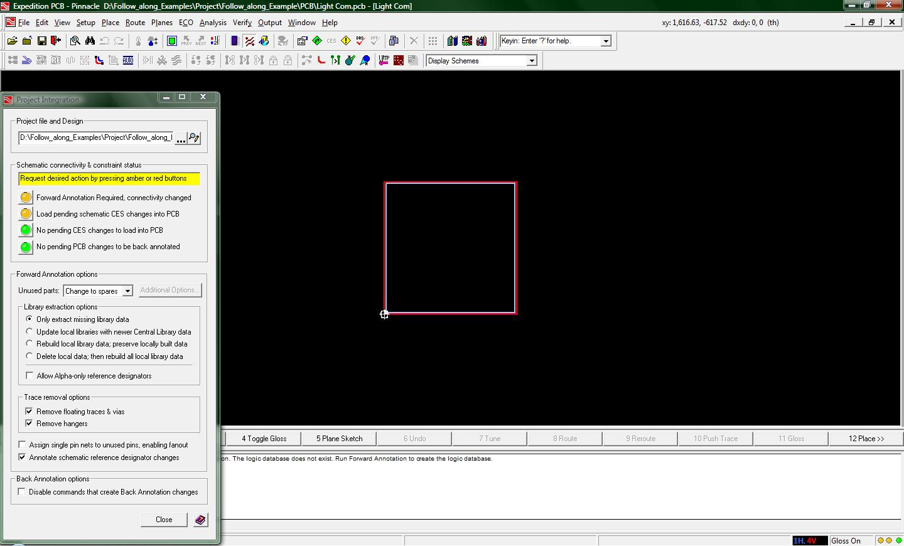

DxDesigner to Expedition PCB: Part 1: Forward Annotation
:
This tutorial has been crafted to show you how to perform forward annotation, also known as “what needs to be done in order to connect your DxDesigner Schematic with Expedition PCB”
For this tutorial we provide you with an example project. This will allow you to see the steps involved in pushing a small schematic over to Expedition PCB. The example will be not be close to the complexity of your project schematic, but often a simple exercise is enough to demonstrate the methods.
After you download and unzip the project, follow these directions to properly set up the project on your machine.
Once you have completed the import tutorial, click on the Design “LightCom” to view the following schematic:

(1-start.jpg)
This small design makes use of eight capacitors, four LED-diodes, two MAX-232 level-shifter chips, and two 4-pin connectors. Don't get hung up trying to figure out how this circuit works or what it does. It isn't a "real" circuit. And, it does not do anything useful. We have created it solely to illustrate the process of pushing a somewhat simple schematic through to ExpeditionPCB.
The yellow lines are busses, the purple icons are the parts, and the green lines are nets. Once you have gone through this tutorial, please feel free to modify the design so as to get more familiar with the process of forward annotation. This may help you debug your design.
Let’s get started.
Since the schematic is already drawn, all that needs to be done can be performed by pressing 3 buttons. They are shown below
(2-buttons.jpg)
The three buttons we are concerned with are the two on the left, and then the one on the right.
The first button on the left is the button for Verify. When pressed, this opens up the following window

(3-DRC_window.jpg)
The DRC window has two tabs. The Settings tab allows you to specify whether you are going to check just a single sheet, a block of logic, a block of logic and all hierarchy underneath it, or the entire design. The project we have provided only has a single sheet, so running the DRC on the entire design is like running the DRC on the sheet; so use either option for this tutorial. It is, however, safer to just select the option to check the entire design.
Now, the Rules tab has a lot of information about specific rules you can check your design against. Our recommendation is to enable all rules to check your design to the fullest. However, it is good idea to consult your instructor about which rules you need for your design to be ready for Expedition PCB.
Click the OK button at the bottom of this window and the DRC will analyze your design. When it is done analyzing, make sure to check and correct any errors in your design. If you are following along with the project we provided, and you have enabled all rules in the DRC, you will find that there are some errors present in the design. These errors are because DxDesigner can not tell that the connectors will drive some lines. These errors also show up on the lines connected to a capacitor which is driven by the power plane VCC (which will not drive that line after the capacitor is fully charged). These errors are true errors, but let us just ignore them. In this example, we never intended to drive pins 11 and 10 of both RS232 chips.
Once you have familiarized yourself with the DRC, it is time to check out the Packager, which is the button immediately to the right of the Verify button.

(4-packager_button.jpg)
Once you press the Packager button, the following window appears.

(5-packager_window.jpg)
This window will be creating the PDB (Parts DataBase) that is used in conjunction with Expedition PCB. We have only changed one setting in this window and that is the option in the PDB Extraction Options portion of the window. Instead of using the option “Only Extract Missing Library Data” we have opted to use the option “Delete Local Data, then rebuild all local library data”.
The reason to use the last option is to ensure that all changes you have made to your schematic are correct and that there are no extra parts contained in your local parts library. If you ran the packager with the first option of only extracting missing library data, and then later found that you had used the wrong part, you would need to run the packager again. When you ran it again you would then be adding the part that you had changed, but not deleted --- i.e. the wrong part that you had originally added to the PDB. We recommend that you play it safe and always rebuild your local library.
When you are ready to run the packager, click the OK button at the bottom of the window. This will run a bunch of tests, and will build the PDB. If there is an error while trying to package, the packager window will appear again. If this happens then you will need to check out the packager log file. This log file can easily be found; just browse to where you created your project and then browse Integration\PartPkg.log. If you are following along with the project we provided, there should be no packaging problems, so your screen should look like this

(6-packaged.jpg)
Now you are finally ready to have DxDesigner give the schematic information to Expedition PCB. Click the red button that looks like the following:
(7-Expedition.jpg)
This will open the following window

(8-DxD_to_Ex.jpg)
The only thing that will need to be changed from the information being presented to you is the drop down box for "Select Template". You will be creating a 4-layer board, so click on the template

(9-DxD_to_Ex_2.jpg)
Once you have selected the 4-layer template, you are ready to press OK. Note that this tutorial is using a "standard" 4-layer template. When you are designing your ECE189 project, we will be using a special ECE189 4-layer template that contains all of ExpeditionPCB configuration settings you will need. Now, just be patient as ExpeditionPCB is loaded and all the information from DxDesigner is communicated to ExpeditionPCB.
When the two programs are all done talking (for now), Expedition PCB will have loaded and the following window will be displayed:

(10-forward_annotate.jpg)
Click the Button for Yes. You will have to be patient again as more information is processed and Expedition PCB will look like the following when you are required for more input.

(11-project_integration.jpg)
Now the last thing to do before you are ready to use Expedition is to click on the first “yellow light” in the project integration button. This will run the final checks and all of your project will be loaded into Expedition PCB.
All of the lights will be green in the project integration window when you are finished with DxDesigner. As long as there are no changes that will need to be made to the connectivity of the project, Expedition PCB will be the only program you will need to work with from now on.
Congratulations!